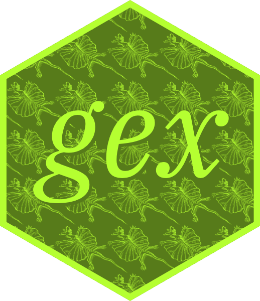
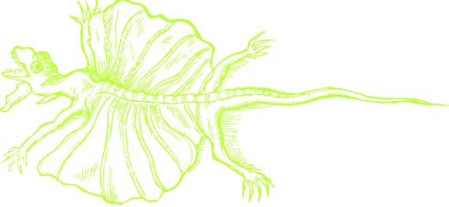
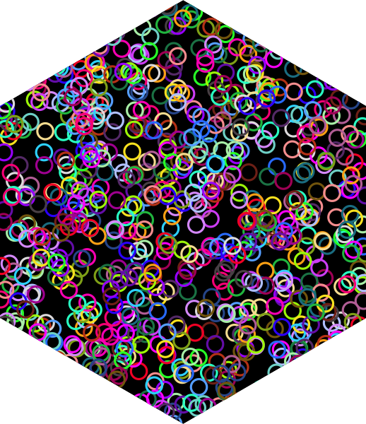
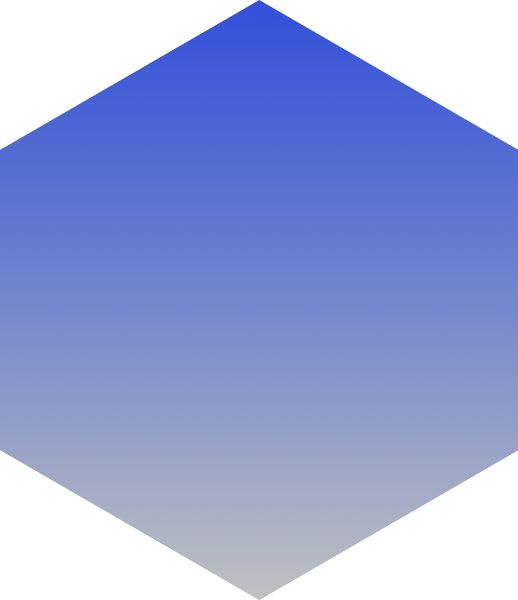

install.packages("remotes") # if not yet installed
remotes::install_github("matt-dray/gex")
tl;dr
The package {hexbase} has been improved and renamed {gex}. It’s no longer ‘dependency free’, but has a goal of being ‘gridverse’ only. Sellout!
Enter the gecko
In my last post I wrote about {hexbase}: a dependency-free hex-logo builder, which was helping me learn the basics of R’s grid-graphics system.
Now the package goal is to stay ‘lightweight’ and import only Prof Murrell and co’s family of small ‘gridverse’ packages (I think I’ve invented this term?).1
A great example of the benefit is for the hex border. In {hexbase}, the ‘border’ was just the gap between a smaller hexagon inside a bigger one. Now, {gex} uses {gridGeometry}‘s polyclipGrob() with op = "minus" to ’cut out’ a smaller from a bigger hexagon to create a polygon that can be applied with add_border().
Hence the name change: ‘gex’ is an allusion to grid + hex. I liked ‘grex’ more, but it’s already taken on CRAN. Also, a certain flavour of 90s gamer might appreciate the new name.
Cast a gex hex
Building a hex with {gex} differs little from {hexbase}. The steps are:
- Open a PNG graphics device with
open_hex(). - Add the hexagon with
add_hex(). - Add and arrange as many text and image elements as you like with
add_text()andadd_image(). - Choose to overlay a border with
add_border()(or not). - Close the device and write the file with
close_device().
Below is the code used to create the logo for the package itself (how meta), which is shown at the top of this post.
First, install the package.
Image manipulation is at the the user’s discretion before being added to the hex. Here I’ll use {magick} to wrangle a line-drawing of a lizard that I want to use (which is bundled in the package), turning it from black to green. I’ll save it as a new PNG and re-read it.
img_tmp <- tempfile(fileext = ".png") # temp storage for image
system.file("images", "lizard.png", package = "gex") |>
magick::image_read() |>
magick::image_fill("olivedrab1", fuzz = 100, refcolor = "black") |>
magick::image_write(img_tmp) # write
img <- png::readPNG(img_tmp) # read the edited image
Now I’ll start building the hex. Here I’m using loops to write multiple images and to add the text twice with an offset and different colours for a drop-shadow effect.
# Set up write location and graphics device
temp_path <- tempfile(fileext = ".png")
gex::open_device(temp_path)
# Add same image multiple times in a loop
gex::add_hex(col = "olivedrab4")
for (x in seq(-0.04, 1, 0.2)) { # add many images in a loop
for (y in seq(0, 1, 0.16)) {
gex::add_image(img, x, y, width = 0.3, angle = -30)
}
}
# Add text with 'drop shadow'
font <- "IBM Plex Serif" # installed on my system
x <- 0.52; y <- 0.56 # starting positions
styles <- list( # to loop over
list(coords = c(x = x + 0.01, y = y - 0.01), col = "olivedrab4"),
list(coords = c(x = x, y = y), col = "olivedrab1")
)
for (style in styles) {
gex::add_text(
string = "gex",
x = style[["coords"]][["x"]],
y = style[["coords"]][["y"]],
size = 60,
col = style[["col"]],
family = font,
face = "italic"
)
}
# Add border and write file
gex::add_border(col = "olivedrab1")
gex::close_device()As mentioned previously, you build the hex by opening a device and adding elements to it, before closing it to save the file. That may make some people uncomfortable since there’s no ‘object’ as such; you can’t pipe between functions in {gex}. But this comes as no surprise to base and grid-graphics enjoyers, which is kind of the target market. There are dozens of us!
Having said this, I did enjoy Kieran’s recent sermon on this style of interaction:
We have to remember to turn the device off once we’re done with it, like it’s 1997. If you forget, you won’t notice for a while but eventually it’s like your Dad is gonna yell at you because you forgot to turn the lights off downstairs before you went to bed or you left the fridge door open after you went to get a drink of milk or you opened the window while the air conditioning is running in the house what the hell kind of child have I raised.
I’m (probably) not your dad and you (probably) weren’t raised in a barn; I trust you to close_device() when using {gex}. Also, the package is partly named after a videogame from pre-1997, so it’d be anachronistic to do it any other way, amirite?
Going on grid
Since {gex} uses the grid graphics system, other ‘gridverse’ packages can be used to help make your hex. Two others are {gridBase} to put a base R plot in a viewport and {gridGraphics} to convert that plot to a grob. Handily, Guangchuang Yu (of {hexSticker} fame!) wrapped this up in ggplotify::base2grob(), which does what it says on the tin.
Here’s a plot of multicoloured points applied to a hex. Note all the {grid} calls, which are the type of thing that {gex} hides in its functions so you don’t have to think about it (more on that later in the post).
# Start with {gex}
temp_path <- tempfile(fileext = ".png")
gex::open_device(temp_path)
gex::add_hex()
# Add a base plot without {gex}
grid::pushViewport(grid::viewport())
base_plot <- ggplotify::base2grob(
\() {
par(mar = rep(0, 4)) # no plot margin
n <- 1000
plot(
runif(n), runif(n), # 'random' points
xaxs = "i", yaxs = "i", # 'edge-to-edge' plot
axes = FALSE, ann = FALSE, # no chart stuff
pch = 16, col = palette.colors(n, , , TRUE) # style points
)
}
)
grid::grid.draw(base_plot) # it's a grob now, we can draw it
grid::popViewport()
# Finish up with {gex}
gex::close_device()
Other grid-adjacent packages could be used as well. Trevor has put together {gridpattern} to allow for pattern and gradient fills. For example, you could call grid.pattern_gradient() to add a splendid background to your hex.
temp_path <- tempfile(fileext = ".png")
gex::open_device(temp_path)
gex::add_hex()
gridpattern::grid.pattern_gradient()
gex::close_device()
Lovely.
The sticky back-end
In case you’re wondering what’s going on under the hood, here’s a simplified description. This is more for the nerds. Which is what you are if you’ve read this far.
Grid reference
You can find lots of useful material about {grid} and the ‘gridverse’ on the dedicated page of The University of Auckland’s website and on Prof Murrell’s home page. Read that first.
But here’s a massive oversimplification anyway. With grid graphics you draw ‘grobs’ (graphics objects, like polygons, lines and text) into little windows on your canvas called ‘viewports’. You create a viewport with various properties (size, position, rotation, etc), ‘push’ to activate it, draw your grobs inside it and then ‘pop’ the viewport to add it to your canvas. Importantly, you can nest viewports for finer control or to inherit characteristics. Note that the default coordinates of your canvas are on ‘npc’ (native parent coordinates) units, meaning a 1 × 1 area with origin [0,0] in the lower left.
{gex} probably doesn’t use {grid} optimally, but I’ve learnt enough for the package to work for my own needs at least.
Push pops
With {gex}, you start by running open_device() to call a png() graphics device pre-filled with the width and height of the stickers standard, plus a transparent background. The graphics device will be populated with grobs and eventually saved to file in close_device().
Next, the add_hex() function. It first sets up a polygonGrob of hexagon vertices, which is used in two ways. First, a viewport is pushed with the grob as a clip mask, which means anything falling outside of the hexagon area will be deleted when this viewport is popped. This happens as the end in close_device(). Second, we grid.draw() the grob in its own viewport so its added to the canvas. Since a ‘point-up’ hexagon is slightly narrower than tall, we remove the ‘slivers’ either side of it on the x-axis by setting the enclosing viewport’s xscale to the maximum hexagon width. This ensures that our final PNG file goes ‘edge to edge’. The hex grobs are added with ‘native’ rather than ‘npc’ units so that they’re relative to that ‘sliverless’ viewport.
The add_text() and add_image() functions work in similar fashion: a viewport is opened to house a grob, which is drawn with grid.text() or grid.raster(). Crucially, we put that grob in another viewport in which we can control rotation. We nest the viewports this way so that the user controls the x and y positions or a rotated text or image relative to the hex. If we didn’t do this, the x and y positions would be relative to the element’s angle of rotation.
You would typically use add_border() at this stage, if you want to. The border is just a polygon with the same coordinates as in add_hex(), but with a smaller hexagon cut out of the middle. The width of the border is just the inverse ratio of the inner to the outer hexagon size. By placing this after the text and images, it will overlay them if they inhabit the same coordinates.
Finally, we close_device() to pop the ‘hanging’ viewports we pushed in open_device() at the start. This includes the one that clips out any content that falls outside the extent of the hexagon. The function also contains a call to dev.off() to close the device and save the image to the path specified by file_path in open_device().
Further gexplorations?
As ever, I’m having a nice time. Also as ever, I may choose to continue this or stop working on it entirely. The most important thing is that {gex} will help me towards the utopia of Hex-Driven Development (HDD), the one true method of developing R packages by starting with the sticker.2
Environment
Session info
Last rendered: 2025-02-25 22:16:42 GMTR version 4.4.2 (2024-10-31)
Platform: aarch64-apple-darwin20
Running under: macOS Ventura 13.2.1
Matrix products: default
BLAS: /Library/Frameworks/R.framework/Versions/4.4-arm64/Resources/lib/libRblas.0.dylib
LAPACK: /Library/Frameworks/R.framework/Versions/4.4-arm64/Resources/lib/libRlapack.dylib; LAPACK version 3.12.0
locale:
[1] en_US.UTF-8/en_US.UTF-8/en_US.UTF-8/C/en_US.UTF-8/en_US.UTF-8
time zone: Europe/London
tzcode source: internal
attached base packages:
[1] stats graphics grDevices utils datasets methods base
loaded via a namespace (and not attached):
[1] htmlwidgets_1.6.4 compiler_4.4.2 fastmap_1.2.0 cli_3.6.3.9000
[5] tools_4.4.2 htmltools_0.5.8.1 rstudioapi_0.16.0 yaml_2.3.10
[9] rmarkdown_2.28 knitr_1.48 jsonlite_1.8.9 xfun_0.48
[13] digest_0.6.37 rlang_1.1.4 evaluate_1.0.1 Footnotes
There a few more packages listed in ‘Suggests’, but these are mostly used for testing or examples. A particular highlight is {tinytest}, which I’m using for the first time and is very much in the ‘lightweight’ spirit.↩︎
Could this explain why my packages don’t have millions of downloads? Am I so out of touch? No, it’s the children who are wrong.↩︎
Reuse
CC BY-NC-SA 4.0